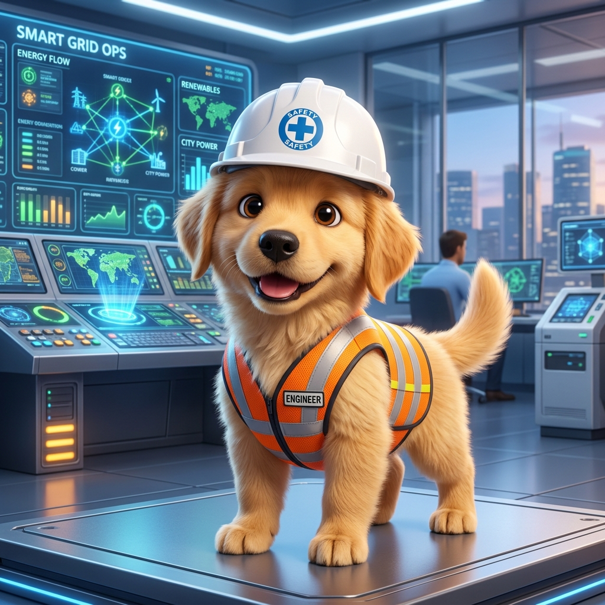

Skor keyakinan & kestabilan fizik bagi 4 model AI pertahanan:
Penyelidikan keselamatan siber grid pintar berasaskan model IEEE 39-Bus, AI multi-model & pemulihan autonomi di Universiti Malaysia Perlis (UniMAP).
Sistem mengandungi 39 bas (Bas 1–29 Beban/Talian, Bas 30–39 Penjana Kuasa). Klik mana-mana bas di bawah untuk semakan:
Topologi New England 39-bas dengan aliran kuasa masa nyata (Garisan Emas: Janakuasa G1-G10, Biru: Beban/Transmisi):
Stesen pencawang utama voltan tinggi menghubungkan Penjana 3 dan sistem penghantaran wilayah timur.
Memantau kualiti kuasa gelombang tiga fasa (Va, Vb, Vc). Gangguan harmonik & lonjakan voltan dikesan serta-merta semasa serangan:
Menganalisis anomali siri masa voltan dan arus berfrekuensi tinggi untuk mengesan manipulasi fasa.
Memodelkan struktur graf rangkaian 39-bus untuk mengesan anomali spatial jiran penderia.
Menganalisis penyebaran aliran kuasa dinamik merentasi talian untuk mengesan kelewatan DDoS.
Mengesahkan pematuhan hukum Kirchhoff (KCL/KVL). Mengesan pemalsuan data penderia (FDI).
Pemulihan mewajibkan 6 langkah pengesahan keselamatan sebelum suis dibenarkan ditutup semula:
Pilih mana-mana serangan di bawah untuk melihat animasi 3D dan tindak balas sistem imun AI: